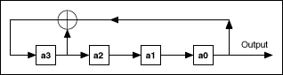

initialize? controls the reseeding of the noise sample generator after the first call of the VI. If initialize? is TRUE, accepts a new state or new seed value and begins producing noise samples based on the new state or new seed value. If initialize? is FALSE, this VI maintains the initial internal seed state and resumes producing noise samples as a continuation of the previous noise sequence. The default is TRUE.
samples specifies the number of samples contained in the mls sequence output array. samples must be greater than 0. The default is 128.
polynomial order specifies the order of the modulo-2 primitive polynomial used to generate mls sequence. If the input value is out of range, this VI truncates the polynomial order to [3, 62]. The default is 31.
seed determines how to generate the internal seed state when initialize? is TRUE. If seed is greater than 0, this VI uses seed to generate the internal state directly. If seed is less than or equal to 0, this VI uses a random number to generate the internal state. seed must not be a multiple of 16384. If initialize? is FALSE, this VI ignores seed. The default is -1.
mls sequence contains the uniformly distributed, pseudorandom pattern.
The Binary MLS VI uses a modulo-2 primitive polynomial to generate the binary Maximum Length Sequence (MLS). The mls sequence is periodic with a period of 2n – 1. Each period consists of 2n – 1 ones and 2n – 1 – 1 zeros, where n is the polynomial order. The mls sequence is spectrally flat, with a near-zero DC term.
For example, if the polynomial order is 4, the Binary MLS VI uses the polynomial g(p) = p4 + p + 1 to generate the mls sequence with a period of 15 in the following manner:

where is the modulo-2 addition, and a0, a1, a2 and a3 are the shift registers.
The following 15-point sequence comprises each period of the generated sequence: 0, 0, 0, 1, 0, 0, 1, 1, 0, 1, 0, 1, 1, 1, 1. However, the starting point might be different for each sequence.
The MLS, also known as a type of Pseudo-Random Binary Sequence (PRBS), is widely used in spread-spectrum transmission systems.
You can use the initialize? input to generate a long random noise sequence block by block. The following block diagram shows two ways to generate identical 300-sample Binary MLS noise sequences with a seed of 2.
 Add to the block diagram
Add to the block diagram Find on the palette
Find on the palette